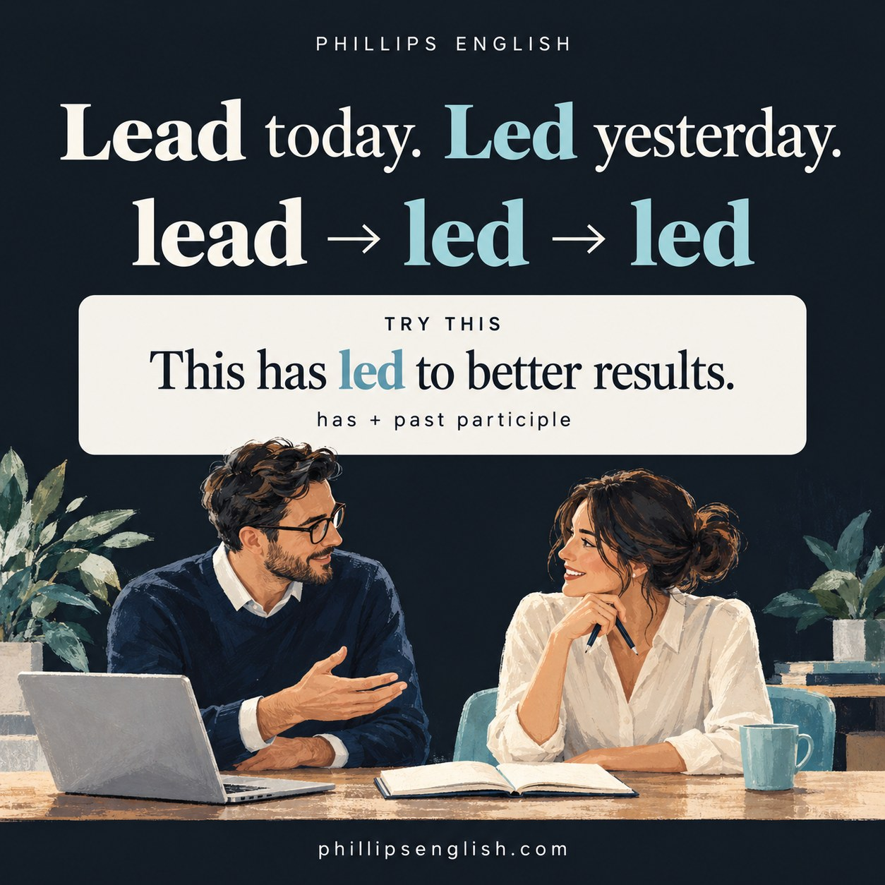

“This has lead to better results.”
Nearly there. That little “a” has sneaked into the wrong place.
The correction
“This has lead to better results.”
→ “This has led to better results.”
It is a small change, but a useful one when you are explaining progress, discussing a project or writing an email. Here is the grammar behind it.
Lead → led → led
Lead is an irregular verb. Its past tense and past participle are both led.
| Form | Verb | Example |
|---|---|---|
| Base form | lead | “I lead the discussion every Monday.” |
| Past tense | led | “I led the discussion yesterday.” |
| Past participle | led | “I have led three discussions this month.” |
Why is it “has led to”?
In the present perfect, we use have or has + past participle. For lead, that participle is led.
has + led + to
“Regular practice has led to more confidence.”
Here, we are connecting earlier practice with a result that matters now: greater confidence.
Use has with he, she, it or a singular subject. Use have with I, you, we or they:
- “This change has led to fewer mistakes.”
- “These changes have led to fewer mistakes.”
That is why “has lead to” needs correcting. The helping verb has calls for the past participle in this structure.
Led or has led?
Compare “The meeting led to a new plan yesterday” with “The meeting has led to a new plan”. The first locates the event in a finished past time. The second focuses on its connection to the present.
If you name a finished time such as yesterday or last week, use the past simple for that event.
How do you pronounce lead and led?
- Lead, the verb: /liːd/. It rhymes with need.
- Led: /led/. It rhymes with bed.
Say this aloud: “I lead the team. I led the meeting. I have led several projects.”
English adds a little mischief here: lead, the metal, is also pronounced /led/. That is a different word. The past form of the verb is still spelled led.
Use lead to when explaining a result
Lead to can mean cause a result. In this use, to is a preposition, so follow it with a noun or an ing form:
- “Better planning has led to shorter meetings.”
- “More practice has led to speaking more confidently.”
Try keeping the phrase together when you learn it. “Has led to” is something you can use straight away in a conversation about work, learning or a change in your routine.
Your turn: three quick answers
Choose lead or led:
- “I ___ the team last year.”
- “The new process has ___ to fewer mistakes.”
- “Clear instructions can ___ to better results.”
Check your answers
- led: a past event.
- led: has + past participle.
- lead: can + base form.
Now finish your own sentence: “Regular practice has led to…” What has improved for you?
Make the correction stick
At Phillips English, I like to take a correction and put it straight back into a conversation. We can talk about a meeting you led or a change that has led to something better. It gives the grammar a job to do.
If a mistake keeps turning up in your English, request a free 25 minute trial lesson. We can work on your grammar and pronunciation while talking about something relevant to you.
Grammar references: Cambridge Dictionary: lead and led; Cambridge Dictionary: lead to; British Council: present perfect.